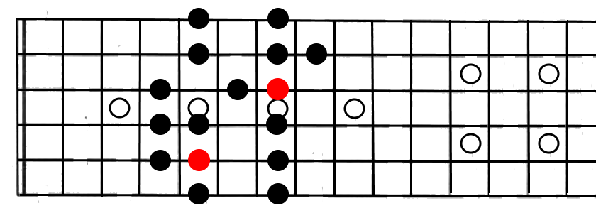

從前面的篇章中，我們可以知道，每一種調的音，都依循著一定的規則，因此會在指板上有幾乎一樣的「指形」，以C大調和D大調的Pattern 2指形為例(紅色為主音)，可以發現兩者的差異，只有把位的不同而已，除此之外，完全沒有任何的差異。
|  | |
C大調Pattern 2 |
D大調Pattern 2 |
因此，我們可以從這一個規則中，了解到轉調在吉他上是相當容易的，只要能夠熟析各個指形，想轉成任何調都可說是輕而易舉的事。
舉例而言
今天，我們有一小段G大調的樂句，而因為表演的需求，得將這首歌降key處理，要將它降為D#大調。因此，我們可以發現G和D#相差兩個全音，在指板上就是相差四格的位置，轉調後的新位置就出來了：
 |
|
C大調Pattern 2 |
D大調Pattern 2 |